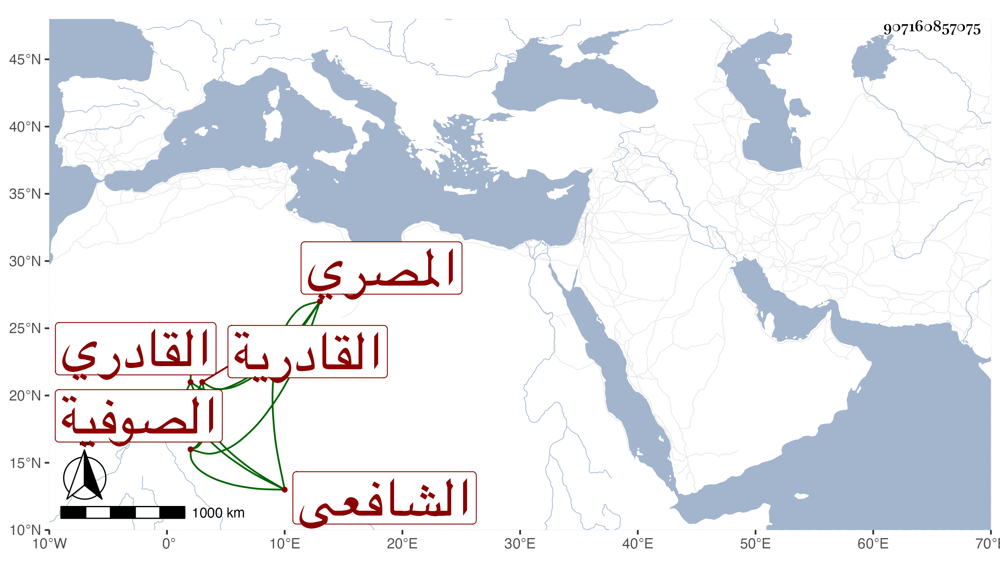

0902Sakhawi.DawLamic.ITO20230111-ara1.EIS1600.907160857075
Biography ID: 907160857075
347
أحمد بن محمد بن صدقة الشهاب المصري القادري الشافعي أحد الصوفية بالصلاحية والجماعة القادرية . وجدت معه أوراقا بعرض العمدة على البلقيني وابن الملقن والعراقي والدميري وغيرهم فيها كشط بمحل اسمه فأعرضت عنها مع إمكانه ولكنه قد سمع الشاطبية على الشرف بن الكويك والزراتيتي مع شيخنا الزين رضوان فاستجزناه لذلك . مات في حدود الستين .
